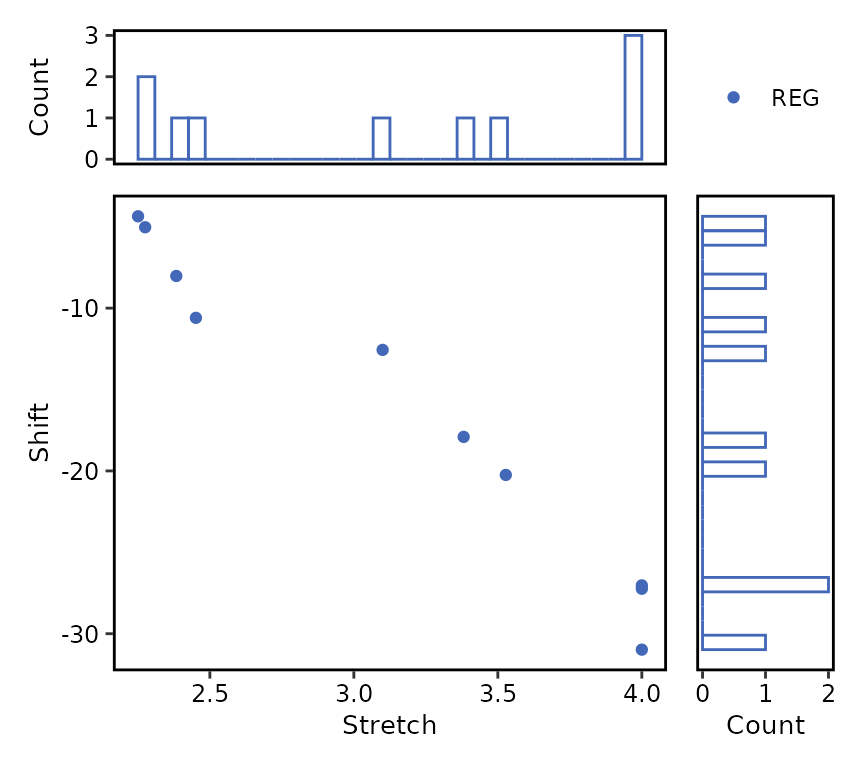
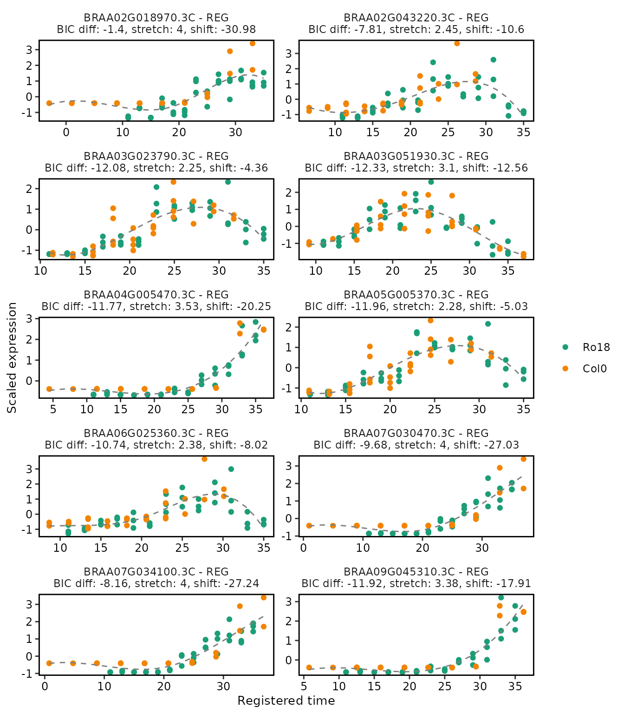
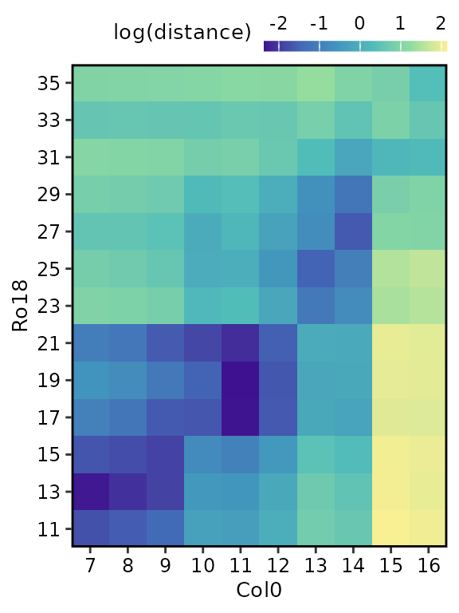
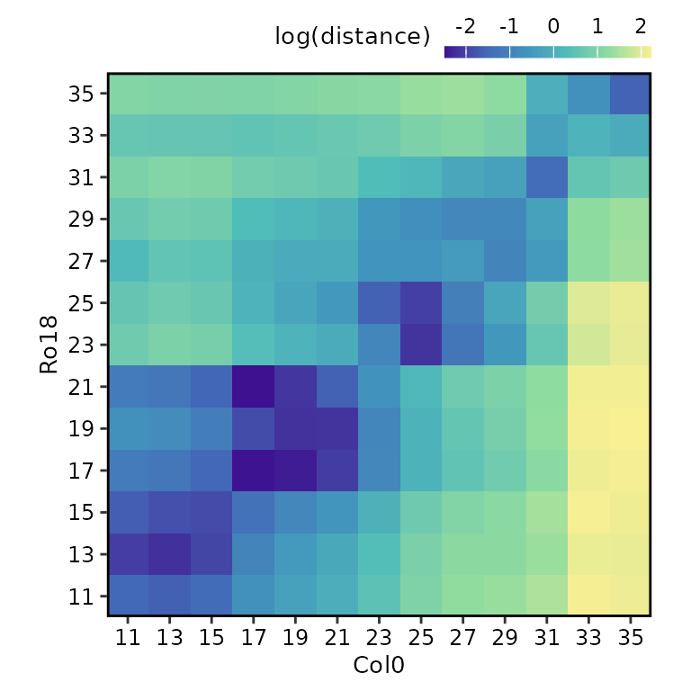

After running the registration function register() as
shown in the registering
data article, users can summarise and visualise the results as
illustrated in the figure below.

Summarising registration results
The total number of registered and non-registered genes can be
obtained by running the function summary() with
registration_results object as an input.
The function summary() returns a list with S3 class
summary.res_greatR containing four different objects:
-
summaryis a data frame containing the summary of the registration results (default S3 print). -
registered_genesis a vector of gene IDs which are successfully registered. -
non_registered_genesis a vector of non-registered gene IDs. -
reg_paramsis a data frame containing the distribution of registration parameters.
# Get registration summary
reg_summary <- summary(registration_results)
reg_summary$summary |>
knitr::kable()| Result | Value |
|---|---|
| Total genes | 10 |
| Registered genes | 10 |
| Non-registered genes | 0 |
| Stretch | [2.25, 4] |
| Shift | [-30.98, -4.36] |
The list of gene IDs which are registered or non-registered can be viewed by calling:
reg_summary$registered_genes
#> [1] "BRAA02G018970.3C" "BRAA02G043220.3C" "BRAA03G023790.3C" "BRAA03G051930.3C"
#> [5] "BRAA04G005470.3C" "BRAA05G005370.3C" "BRAA06G025360.3C" "BRAA07G030470.3C"
#> [9] "BRAA07G034100.3C" "BRAA09G045310.3C"
reg_summary$non_registered_genes
#> character(0)Plot distribution of registration parameters
The function plot() allows users to plot the bivariate
distribution of the registration parameters. Non-registered genes can be
ignored by selecting type = "registered" instead of the
default type = "all". Similarly, the marginal distribution
type can be changed from type_dist = "histogram" (default)
to type_dist = "density".
plot(
reg_summary,
type = "registered"
)
Plotting registration results
The function plot() allows users to plot the
registration results of the genes of interest (by default only up to the
first 25 genes are shown, for more control over this, use the
genes_list argument).
# Plot registration result
plot(
registration_results,
ncol = 2
)
Notice that the plot includes a label indicating if the particular genes are registered or non-registered, as well as the registration parameters in case the registration is successful.
For more details on the other function arguments, go to
plot().
Analysing similarity of expression profiles over time before and after registering
Calculate sample distance
After registering the data, users can compare the overall similarity
between datasets before and after registering using the function
calculate_distance(). By default all genes are considered
in this calculation, this can be changed by using the
genes_list argument.
sample_distance <- calculate_distance(registration_results)The function calculate_distance() returns a list with S3
class dist_greatR of two data frames:
-
resultis the distance between scaled reference and query expressions using time points after registration. -
originalis the distance between scaled reference and query expressions using original time points before registration.
Plot heatmap of sample distances
Each of these data frames above can be visualised using the
plot() function, by selecting either
type = "result" (default) or
type = "original".
# Plot heatmap of mean expression profiles distance before registration process
plot(
sample_distance,
type = "original"
)
# Plot heatmap of mean expression profiles distance after registration process
plot(
sample_distance,
type = "result",
match_timepoints = TRUE
)
Notice that we use match_timepoints = TRUE to match the
registered query time points to the reference time points.